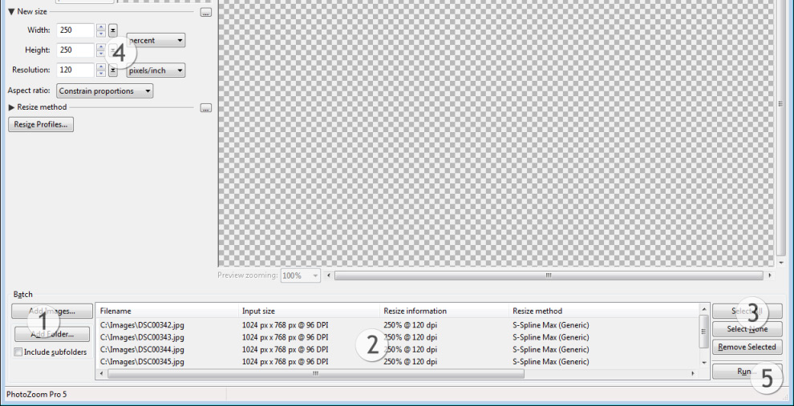
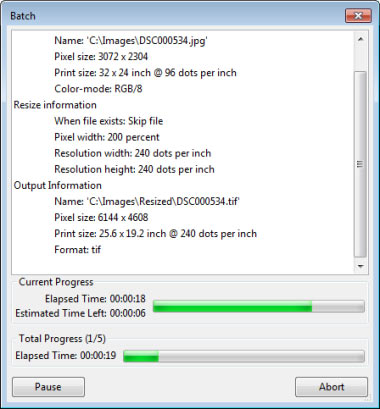

Processamento em Lotes
Este recurso permite redimensionar diversas imagens ao mesmo tempo. Você poderá aplicar os mesmos parâmetros a todas as imagens, ou usar outros parâmetros para diferentes (grupos de) imagens. Escolha o que prefere, e o PhotoZoom Pro 5 fará o resto.
Clicando-se no botão "Novo Lote", o menu de lotes se abrirá na parte inferior da tela: "New Batch" ===========>"Novo Lote"

1) Selecione as imagens que deseja processar
O botão "Adicionar Imagens..." permite adicionar uma ou mais imagens de uma pasta para um lote. Para adicionar toda uma pasta de imagens, utilize o botão "Adicionar Pasta...". Se a opção "Incluir Subpastas" (Include subfolders), for assinalada antes da seleção de uma pasta, todas as imagens localizadas nas subpastas contidas na pasta em questão também serão adicionadas. "Add Images..." ====> "Adicionar Imagens" "Add Folder..." ====> " Adicionar Pasta..." "Include subfolders" =========> "Incluir subpastas"
2) Lista de imagens
Aqui os arquivos de seu lote são listados com todos os detalhes pertinentes: tamanho de entrada, informações de redimensionamento, método de redimensionamento e tamanho de saída. Ao efetuar alterações nos ajustes (por exemplo, no método de redimensionamento), as informações da lista são igualmente modificadas. As alterações efetuadas somente se aplicam às imagens selecionadas na lista. Você poderá selecionar imagens isoladas, grupos separados ou a lista inteira.
As alterações na seleção podem ser efetuadas de diferentes formas:
- Para adicionar imagens isoladas à seleção, pressione e mantenha pressionada a tecla Ctrl (Windows) ou a tecla Cmd (Mac) e clique nas imagens que deseja incluir.
- Para selecionar um grupo de imagens, clique em uma imagem após a outra enquanto mantém a tecla Shift pressionada. As duas imagens e todas as outras que se encontram entre elas serão selecionadas
3) Botões de seleção
Selecionar tudo: seleciona todas as imagens existentes na lista
Não selecionar imagem: desfaz a seleção de todas as imagens que foram selecionadas
Remover Seleção: remove todas as imagens selecionadas da lista de imagens
4) Configurações de redimensionamento
Aqui o usuário especifica as novas configurações de tamanhos e do método de redimensionamento para as imagens do lote. Para mais detalhes sobre essas configurações, consultar os capítulos Programa Explicado (parágrafos 2 e 3) e Ajustes Finos. As alterações feitas somente serão aplicadas aos arquivos selecionados.
Observação: quando inúmeras imagens são selecionadas, determinados valores da seção Novo Tamanho nem sempre poderão ser visíveis. A visibilidade desses valores depende do tamanho das imagens selecionadas, que pode variar de uma para outra, assim como da forma pela qual os tamanhos estão sendo especificados (por exemplo: medidas em pixels ou em porcentagem podem fazer diferença). Deste modo, pode ser impossível exibir um valor que seja correto em relação a cada uma das imagens selecionadas. Nesse caso o PhotoZoom Pro 5 deixará o valor em branco. Apesar disso, é possível encontrar todas as informações a respeito de cada uma das imagens na lista de imagens no menu de Lotes.
5) Executar
Ao concluir todas as configurações, clique no botão "Executar". A seguinte janela será exibida.

Se deseja alterar a pasta de destino, clique no botão "Procurar..."
Caso especifique uma pasta ainda não existente, o PhotoZoom Pro 5 perguntará se deseja que o programa crie a referida pasta.
Em "Formato de saída" é possível selecionar o formato no qual deseja salvar as imagens, como arquivos TIFF, JPEG, PNG, BMP, ou TGA. O formato TIFF é utilizado com mais frequencia porque suporta uma ampla faixa de propriedades de imagem (consultar também o formatos de arquivos de imagens). Para arquivos menores, utilize o formato JPEG.
Finalmente, você poderá escolher o que o PhotoZoom Pro 5 deverá fazer ao salvar um arquivo, quando um outro arquivo de mesmo nome já existe na pasta de destino.
Tudo pronto? Clique em "Iniciar Lote" para iniciar o processamento:

A janela de situação apresenta uma estimativa do tempo que o PhotoZoom Pro 5 levará para finalizar a tarefa. Essa estimativa é atualizada continuamente. Dependendo das configurações e do número de imagens, o processo poderá exigir bastante tempo. Observe também que o processamento em lotes exige muito da potência de seu computador, o que poderá prejudicar o desempenho do mesmo ao executar outros aplicativos simultaneamente. Por esse motivo você poderá interromper o processamento para continuá-lo em um momento mais conveniente.